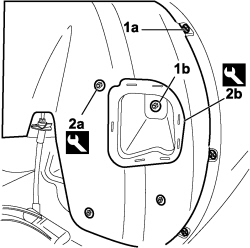
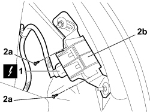

4450B93 REAR TYRES PRESSURE TRANSMITTER, (ONE) LH OR RH - R R
- Path
- Procedures > 44 SUSPENSION AND WHEELS > 4450 HUBS AND WHEELS > 4450B WHEELS AND COMPONENTS > 4450B93 REAR TYRES PRESSURE TRANSMITTER, (ONE) LH OR RH - R R
- Kind
- repair procedure (removal / refitting; the operation number is the code)
- Applies to
- all engines; all production periods
- Interactive page
- https://sloeber94.github.io/elrnDB-fCrm/en/#/194002347
Applies to: all engines; all production periods
 Removing
Removing
 Refitting
RefittingDescription | Connector | |
|---|---|---|
BATTERY |
Op. 4450B06 LEFT REAR WHEEL - R.R
1. Undo the nut (1b) fixing the retainer and the bolts (1a) securing the wheel arch liner to the inner edge of the wing on the bumper.
2. Using the special tool, release the three retaining buttons (2a) and the wheel arch retainer (2b) and partly detach it.
Tool | Description | Function | Validity |
|---|---|---|---|
1878077000 | Knife | Retainer removal |

Applies to: all engines; all production periods
1. Disconnect the electrical connection for the rear tyre pressure sender unit.
Description | Connector | |
|---|---|---|
TYRE PRESSURE CONTROL UNIT AERIAL |
2.Undo the bolts (2a) and remove the control unit (2b).

Applies to: all engines; all production periods
Refitting
Removing- Check that the rear tyre pressure sender unit is not damaged.
- Fit the rear tyre pressure sender unit in place and tighten the twp fixing bolts.
- Connect the electrical connection.
Description | Connector | |
|---|---|---|
1 | TYRE PRESSURE CONTROL UNIT AERIAL |
- Fit the wheel arch.
- Fit the three retaining buttons.
- Tighten the fixing nut and bolts.
Op. 4450B06 LEFT REAR WHEEL - R.R
Description | Connector | |
|---|---|---|
BATTERY |
- Carry out the self-learning procedure for the tyre pressure sender unit (LF sender unit) using the Examiner.